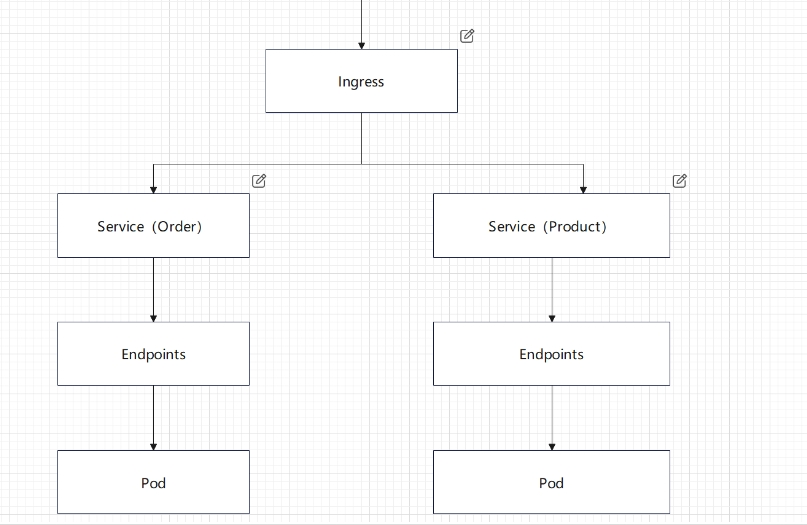

K8s部署
最近公司上了k8s, 我只学了点皮毛,如能学好如虎添翼
前期准备
个人认为，学习K8S前必须掌握docker相关知识，否则学起来很困难
linux上安装k8s
简要结构图

ingress
在Kubernetes中，Ingress 是一个API对象，用于管理对集群内服务的外部访问，通常是 HTTP 和 HTTPS。Ingress 可以提供负载均衡、SSL 终止和基于名称的虚拟主机等功能
apiVersion: networking.k8s.io/v1
kind: Ingress
metadata:
name: example-ingress
spec:
rules:
- host: example.com
http:
paths:
- path: /app1
pathType: Prefix
backend:
service:
name: app1-service
port:
number: 80
- path: /app2
pathType: Prefix
backend:
service:
name: app2-service
port:
number: 80
tls:
- hosts:
- example.com
secretName: example-tls
service
在Kubernetes中，Service 是一种用于定义逻辑集合的Pod及其访问策略的API对象。Service 提供了一种抽象，允许你将一组Pod作为一个单一的服务进行访问，而不需要知道这些Pod的具体位置或数量。Service 可以实现负载均衡、服务发现和故障转移等功能
apiVersion: v1
kind: Service
metadata:
name: my-service
spec:
selector:
app: MyApp
ports:
- protocol: TCP
port: 80
targetPort: 9376
pod
在Kubernetes中，Pod 是最小的可部署计算单元。它是运行在集群上的容器或容器组的抽象。Pod 是Kubernetes中管理和调度容器的基本单元。
apiVersion: v1
kind: Pod
metadata:
name: my-pod
spec:
containers:
- name: my-container
image: nginx:1.14.2
ports:
- containerPort: 80
写好配置文件后，只要执行一个命令即可
kubectl apply -f <YAML-NAME>.yaml
运行起来后可以通过这个命令查看所有pod情况
kubectl get pods
查看所有service情况
kubectl get svc
总结
k8s我也是新学,只了解皮毛而已，也难以讲清，大致流程就是这样，对docker熟悉的小伙伴更容易理解